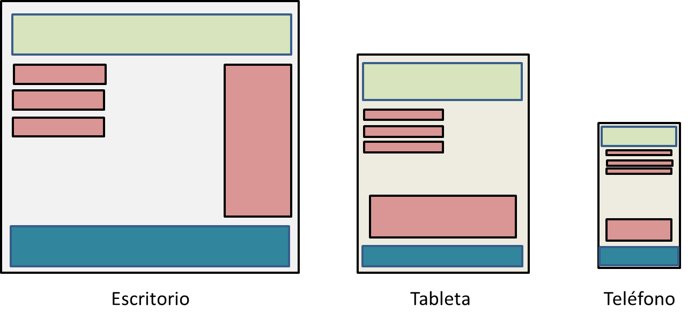
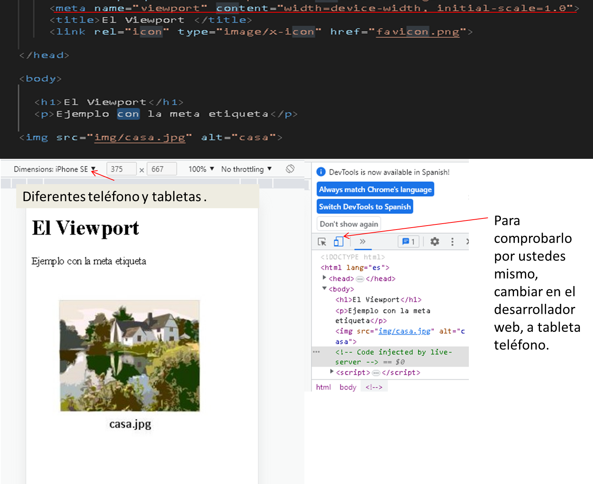
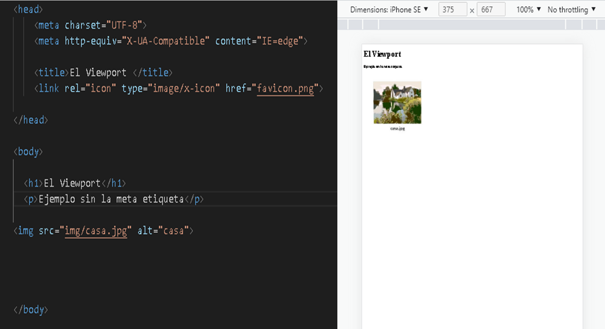
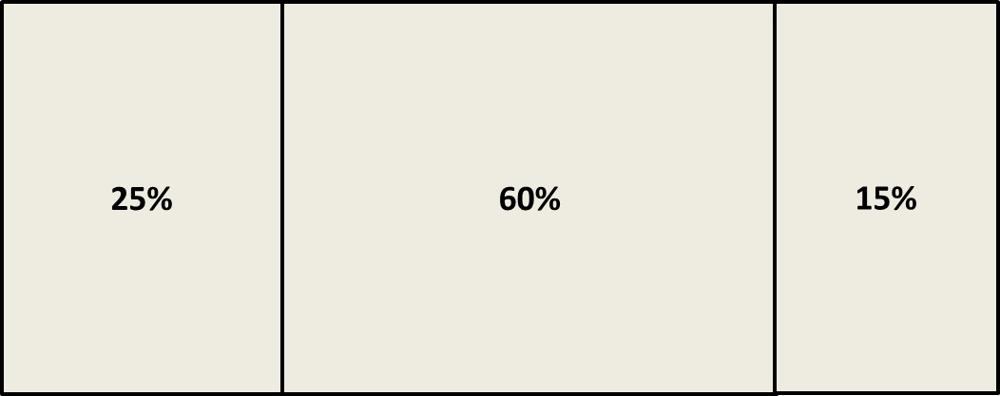
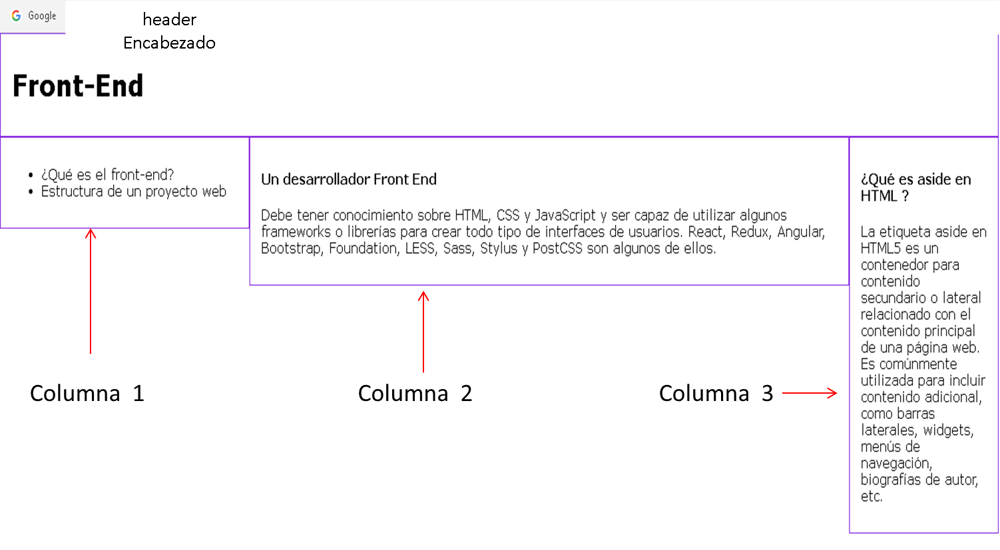
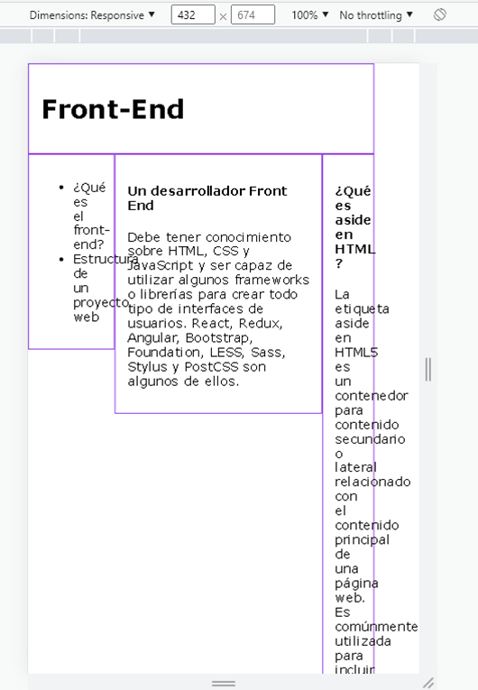
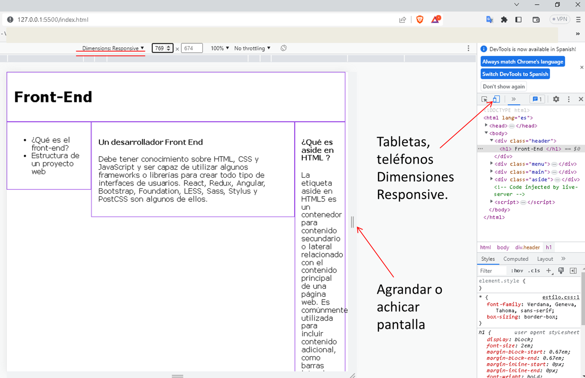
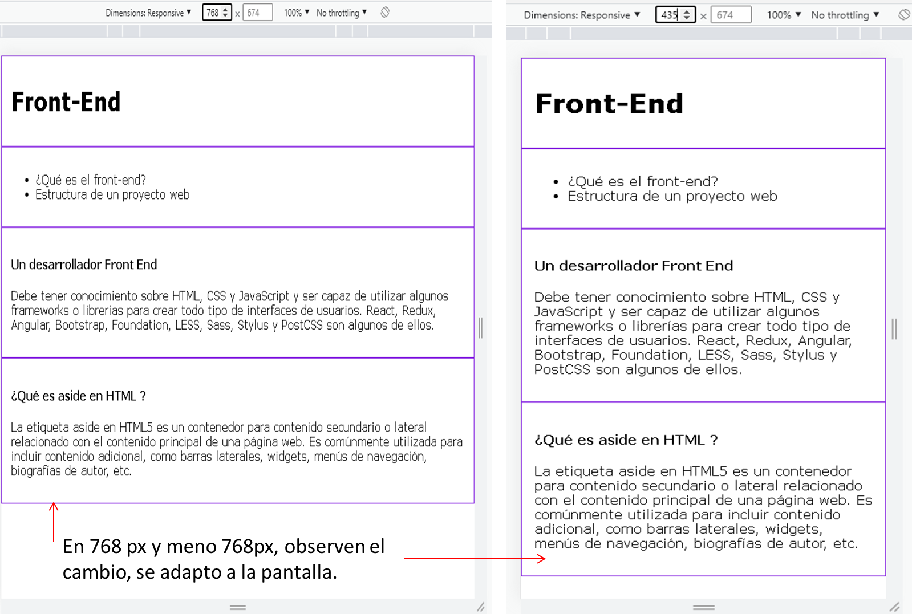

Diseño Web Responsivo
El diseño web receptivo hace que su página web se vea bien en todos los dispositivos, utiliza solo HTML, CSS y no es un programa o un JavaScript.
Las páginas web se pueden ver usando muchos dispositivos diferentes: computadoras de escritorio, tabletas y teléfonos. Su página web debe verse bien y ser fácil de usar, independientemente del dispositivo, no deben dejar de lado información para adaptarse a dispositivos más pequeños, sino adaptar su contenido para adaptarse a cualquier dispositivo
Se llama diseño web receptivo cuando usa CSS y HTML para cambiar el tamaño, ocultar, reducir, ampliar o mover el contenido para que se vea bien en cualquier pantalla.
Componentes de Diseño Web Responsivo Ahora que sabe cómo se ve el diseño web receptivo, echemos un vistazo más de cerca al componente que usan los desarrolladores para maximizar la experiencia del usuario en diferentes dispositivos. Esta descripción general es solo una guía, y la codificación real puede ser más compleja según la naturaleza del sitio web.
El Viewport
¿Qué es el Viewport?
El Viewport es la ventana gráfica, es el área visible del usuario de una página web, varía según el dispositivo y será más pequeña en un teléfono móvil que en la pantalla de una computadora.
Antes de las tabletas y los teléfonos móviles, las páginas web estaban diseñadas solo para pantallas de computadora, y era común que las páginas web tuvieran un diseño estático y un tamaño fijo.
Luego, cuando comenzamos a navegar por Internet usando tabletas y teléfonos móviles, las páginas web de tamaño fijo eran demasiado grandes para caber en la ventana gráfica. Para solucionar esto, los navegadores de esos dispositivos redujeron toda la página web para que se ajustara a la pantalla.
Configuración de la ventana gráfica
HTML5 introdujo un método para permitir que los diseñadores web tomen el control de la ventana gráfica a través de la <meta> etiqueta.
Debe incluir el siguiente elemento <meta>, de Ventana gráfica en todas tus páginas web:
<meta name = "viewport" content = "width = device-width, initial-scale = 1.0">
Esto le da al navegador instrucciones sobre cómo controlar las dimensiones y la escala de la página.
width = device-width, establece el ancho de la página para seguir el ancho de pantalla del dispositivo (que variará según el dispositivo).
initial-scale = 1.0, establece el nivel de zoom inicial cuando el navegador carga la página por primera vez.
Ejemplo con la <meta> etiqueta
Ejemplo sin la <meta> etiqueta
Ajustar el tamaño del contenido a la ventana gráfica
Los usuarios están acostumbrados a desplazarse por los sitios web verticalmente en dispositivos móviles y de escritorio, ¡pero no horizontalmente!. Por lo tanto, si el usuario se ve obligado a desplazarse horizontalmente o alejarse para ver toda la página web, la experiencia del usuario será deficiente.
Algunas reglas adicionales a seguir:
- NO use elementos grandes de ancho fijo: por ejemplo, si una imagen se muestra con un ancho mayor que la ventana gráfica, puede hacer que la ventana gráfica se desplace horizontalmente. Recuerde ajustar este contenido para que se ajuste al ancho de la ventana gráfica.
- NO permita que el contenido dependa de un ancho de ventana en particular para mostrarse bien : dado que las dimensiones de la pantalla y el ancho en píxeles CSS varían ampliamente entre dispositivos, el contenido no debe depender de un ancho de ventana en particular para mostrarse bien.
- Use consultas de medios CSS para aplicar diferentes estilos para pantallas pequeñas y grandes: establecer anchos CSS absolutos grandes para elementos de página hará que el elemento sea demasiado ancho para la ventana gráfica en un dispositivo más pequeño. En su lugar, considere usar valores de ancho relativo, como ancho: 100%. Además, tenga cuidado al usar valores de posicionamiento absolutos grandes. Puede hacer que el elemento quede fuera de la ventana gráfica en dispositivos pequeños.
Diseño flexible
Hay muchas dimensiones disponibles en diferentes dispositivos. No puede depender de ninguna configuración de ventana gráfica. CSS le permite codificar diseños utilizando cuadrículas flexibles definidas en porcentajes en lugar de píxeles Estos conservan el espaciado del contenido incluso cuando cambia la ventana gráfica.
Se puede usar un diseño de cuadrícula flexible, por ejemplo, para dirigir tres columnas de texto para colapsar en una o dos a medida que se reduce la ventana gráfica. Los bloques de contenido y las imágenes también se pueden realinear verticalmente en lugar de horizontalmente. Estas estrategias son cruciales por dos razones: aseguran que el contenido clave esté visible y alineado jerárquicamente y mantengan la proporción adecuada de contenido a espacios en blanco.
Los diseños flexibles también se pueden usar para ocultar contenido estratégicamente. Se requiere pensamiento de diseño para determinar qué contenido debe ocultarse. Un ejemplo común es ocultar su navegación principal y reemplazarla con un menú de hamburguesas. Esta es una buena opción ya que la mayoría de los usuarios de dispositivos móviles reconocerán el menú de hamburguesas y los menús completos pueden ocupar un valioso espacio en la pantalla.
Creación de una vista de cuadrícula receptiva
El uso de una vista de cuadrícula es muy útil al diseñar páginas web. Facilita la colocación de elementos en la página.
Una vista de cuadrícula receptiva a menudo tiene 12 columnas y tiene un ancho total del 100%, y se reducirá y expandirá a medida que cambia el tamaño de la ventana del navegador.
Primero asegúrese de que todos los elementos HTML tengan la box-sizing propiedad establecida en border-box. Esto asegura que el relleno y el borde estén incluidos en el ancho y alto total de los elementos.
Agregue el siguiente código en su CSS:
- estilo.css
- * {
- box-sizing: border-box;
- }
El siguiente ejemplo muestra una página web receptiva simple, con tres columnas:
Ejemplo como quedaría el archivo estilo.css y documento index.html para formar tres columnas
- Puedes copiar y pegar los códigos
- estilo.css
- * {
- font-family: Verdana, Geneva, Tahoma, sans-serif;
- box-sizing: border-box;
- }
- body {
- margin: 0;
- }
- .menu { Esta es columna 1
- width: 25%;
- float: left;
- padding: 15px;
- border: 1px solid blueviolet;
- }
- .main { columna 2
- width: 60%;
- float: left;
- padding: 15px;
- border: 1px solid blueviolet;
- }
- .aside { columna 3
- width: 15%;
- float: left;
- padding: 15px;
- border: 1px solid blueviolet;
- }
index.html
< div class ="header" >
<h1> Front-End </h1>
</div>
< div class="menu" >
<ul>
<li>
¿Qué es el front-end? </li>
<li> Estructura de un proyecto web </li>
</ul>
</div>
< div class="main" >
<h4>Un desarrollador Front End </h4>
<p>Debe tener conocimiento sobre HTML, CSS y JavaScript y ser capaz de utilizar algunos frameworks o librerías para crear todo tipo de interfaces de usuarios. React, Redux, Angular, Bootstrap, Foundation, LESS, Sass, Stylus y PostCSS son algunos de ellos. </p>
</div>
< div class="aside" >
<h4>¿Qué es aside en HTML ? </h4>
<p>La etiqueta aside en HTML5 es un contenedor para contenido secundario o lateral relacionado con el contenido principal de una página web. Es comúnmente utilizada para incluir contenido adicional, como barras laterales, widgets, menús de navegación, biografías de autor, etc. </p>
</div>
La propiedad CSS float especifica cómo debe flotar un elemento, left: El elemento flota a la izquierda de su contenedor si usamos float: left podemos dejar que los elementos floten uno al lado del otro, en este caso las columnas.
El resultado seria
Tenga en cuenta que la página web del ejemplo no se ve bien cuando cambia el tamaño de la ventana del navegador a un ancho muy pequeño, ya aprenderá cómo solucionarlo.
Consultas de Medios
Media query es una técnica CSS introducida en CSS3. Utiliza la @mediaregla para incluir un bloque de propiedades CSS solo si se cumple una determinada condición.
Las consultas de medios permiten cambios de diseño extensos para adaptarse a diferentes ventanas gráficas. Estas son solo algunas de las condiciones para las que se pueden usar las consultas de medios:
- Dimensiones: la altura y el ancho de la ventana gráfica de su dispositivo.
- Orientación: paisaje o retrato (generalmente se usa para identificar a los usuarios de tabletas).
- La relación de aspecto es la relación ancho-alto para la ventana gráfica.
- Al pasar el mouse: la capacidad de pasar el mouse sobre cualquier elemento (solo aplicable con un cursor y no con una pantalla táctil).
- Resolución: la densidad de píxeles del dispositivo.
Estas condiciones, y muchas otras, pueden usarse por separado o combinarse para crear instrucciones precisas. Solo se puede aplicar un diseño correspondiente si se cumplen todas las condiciones.
Utiliza la @mediaregla para incluir un bloque de propiedades CSS solo si se cumple una determinada condición.
Anteriormente creamos una página web con 3 columnas, y respondía, pero no se veía bien en una pantalla pequeña. Las consultas de los medios pueden ayudar con eso. Podemos agregar un punto de ruptura donde ciertas partes del diseño se comportarán de manera diferente en cada lado del punto de ruptura.
Ejemplo: Use una consulta de medios para agregar un punto de interrupción en 768px: Cuando la pantalla (ventana del navegador) se vuelve más pequeña que 768 px, cada columna debe tener un ancho del 100 %:
- estilo.css
- @media only screen and (max-width: 768px) {
- /* Para teléfonos móviles: */
- .menu {
- width: 100%;
- }
- .main {
- width: 100%;
- }
- .aside {
- width: 100%;
- }
- }
Resultado final, estilo.css / index.html copiar y pegar, abrir con open with live server. Luego en Google Chrome, vaya a Inspeccionar y en tableta / teléfono dimensions Responsive, verifiqué con menos 768 px.
Va observar, como hemos dicho antes, las consultas de medios permiten cambios de diseño extensos para adaptarse a diferentes ventanas gráficas.
- estilo.css
- * {
- font-family: Verdana, Geneva, Tahoma, sans-serif;
- box-sizing: border-box;
- }
- body {
- margin: 0;
- }
- .menu {
- width: 25%;
- float: left;
- padding: 15px;
- border: 1px solid blueviolet;
- }
- .main {
- width: 60%;
- float: left;
- padding: 15px;
- border: 1px solid blueviolet;
- }
- .aside {
- width: 15%;
- float: left;
- padding: 15px;
- border: 1px solid blueviolet;
- }
- @media only screen and (max-width: 768px) {
- /* Para teléfonos móviles: */
- .menu {
- width: 100%;
- }
- .main {
- width: 100%;
- }
- .aside {
- width: 100%;
- }
- }
index.html
< div class ="header" >
<h1> Front-End </h1>
</div>
< div class="menu" >
<ul>
<li>
¿Qué es el front-end? </li>
<li> Estructura de un proyecto web </li>
</ul>
</div>
< div class="main" >
<h4>Un desarrollador Front End </h4>
<p>Debe tener conocimiento sobre HTML, CSS y JavaScript y ser capaz de utilizar algunos frameworks o librerías para crear todo tipo de interfaces de usuarios. React, Redux, Angular, Bootstrap, Foundation, LESS, Sass, Stylus y PostCSS son algunos de ellos. </p>
</div>
< div class="aside" >
<h4>¿Qué es aside en HTML ? </h4>
<p>La etiqueta aside en HTML5 es un contenedor para contenido secundario o lateral relacionado con el contenido principal de una página web. Es comúnmente utilizada para incluir contenido adicional, como barras laterales, widgets, menús de navegación, biografías de autor, etc. </p>
</div>
Ejemplo con 769px
Ejemplo con 768px y menos
Framework Introducción
Un framework es un marco o esquema de trabajo generalmente utilizado por programadores para realizar el desarrollo de software. Utilizar un framework permite agilizar los procesos de desarrollo ya que evita tener que escribir código de forma repetitiva, asegura unas buenas prácticas y la consistencia del código.
Los mejores Frameworks CSS responsive
- Bootstrap, el rey del CSS. Si hay un framework CSS famoso, ese es Bootstrap.
- Foundation, avanzado y veterano.
- Pure CSS, ligero y rápido.
- Milligram, minimista hasta en el tamaño.
- Materialize, framework CSS para material design.
- Skeleton, por lo viejos tiempos!
En el siguiente link, pueden seguir aprendiendo de web responsive, y framework Bootstrap. Sigan aprendiendo por su cuenta. Gracias. ¡Feliz Programación.